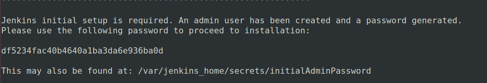
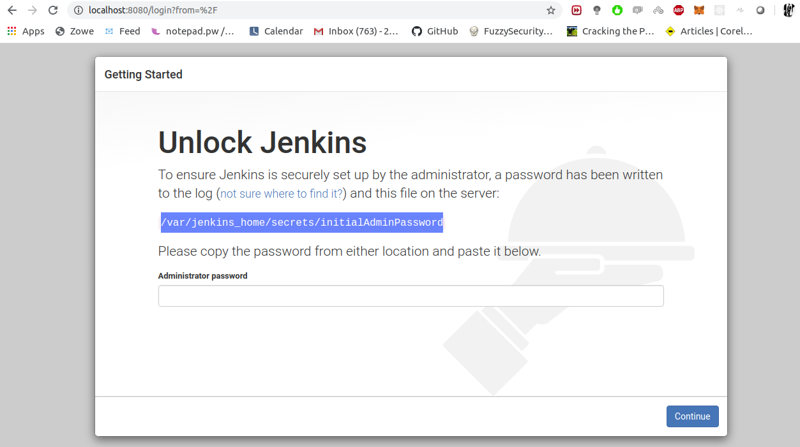

Index
Installation - Docker
Remove Old Versionssudo apt-get remove docker docker-engine docker.io containerd runc
Install Docker
1. Update the apt package index and install packages to allow apt to use a repository over HTTPS:
sudo apt-get update
2. Add Docker’s official GPG key
curl -fsSL https://download.docker.com/linux/ubuntu/gpg | sudo apt-key add -
3. sudo add-apt-repository \
"deb [arch=amd64] https://download.docker.com/linux/ubuntu \
$(lsb_release -cs) \
stable"
4. sudo apt-get update
5. sudo apt-get install docker-ce docker-ce-cli containerd.io
6. sudo docker run hello-world
Once Docker is installed and Running
#Command Found in many places - Won't Work
sudo docker run --name jenkinsci -p 8080:8080 jenkins/jenkins:lts
#Updated Command
sudo docker run -p 8080:8080 -p 50000:50000 -v jenkins_home:/var/jenkins_home jenkins/jenkins:lts

Browse to:
http://localhost:8080
